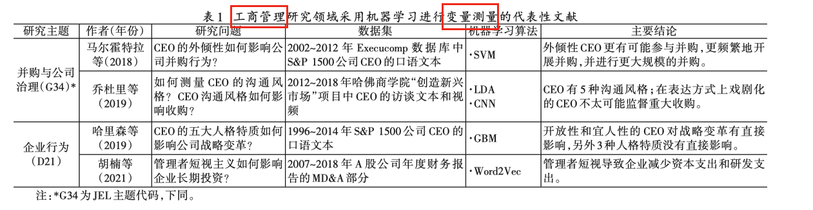
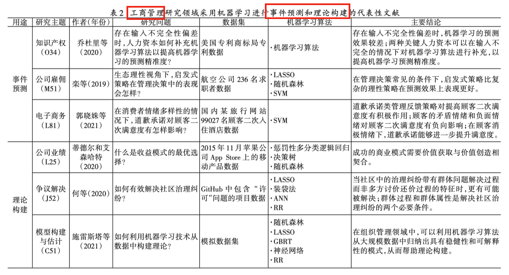
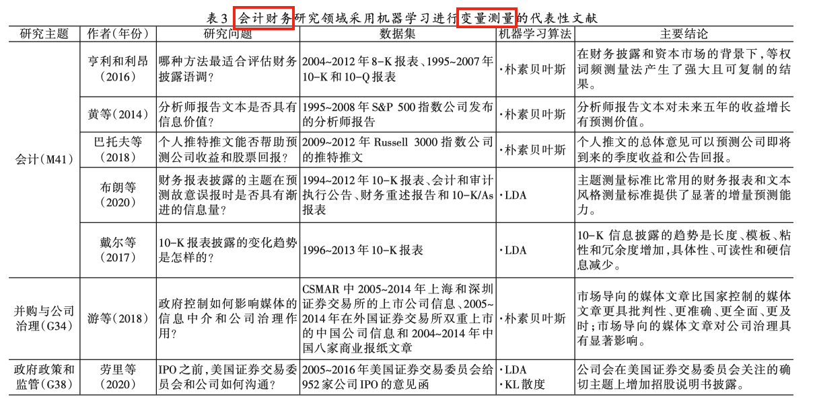
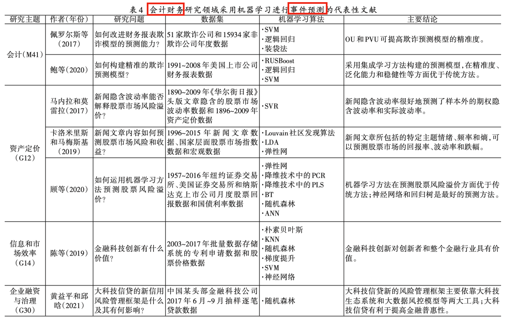
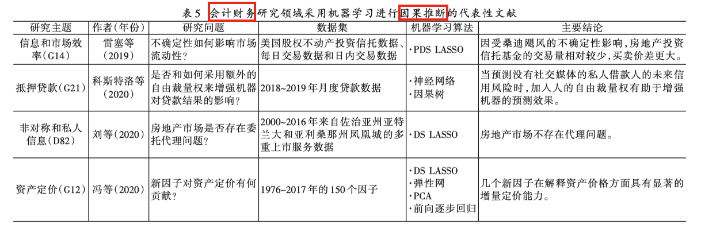
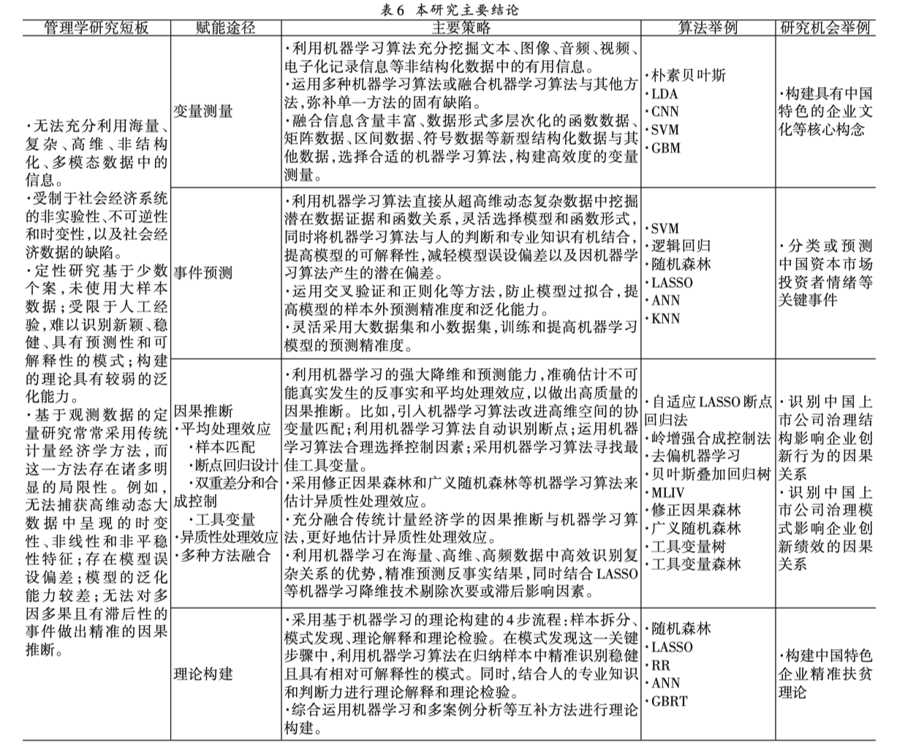

一、论文
刘景江,郑畅然,洪永淼.机器学习如何赋能管理学研究？——国内外前沿综述和未来展望[J].管理世界,2023,39(09):191-216.
摘要: 机器学习正在深刻改变管理学的研究范式与方法。如何运用机器学习更好地赋能管理学研究已经成为学术界关注的前沿热点议题。然而，机器学习在中国管理学研究中的应用仍处于初级阶段。本文基于1999～2021年发表在工商管理和会计财务两大研究领域的国内外顶级期刊的学术文献，识别了学术界借助机器学习开展管理学实证研究的4种核心途径：变量测量、事件预测（包括事件分类）、因果推断和理论构建；梳理了每个途径的代表性文献的研究主题、研究问题、数据集、机器学习算法和研究结论；提出了使用机器学习赋能管理学研究的主要策略，并讨论了中国学者运用机器学习开展中国特色管理理论研究的未来机会。本文显示：将机器学习与传统计量经济学相结合有助于做出更加精准的因果推断；机器学习能够在模式发现这一理论构建的关键步骤中发挥重要作用；将机器学习与多案例分析相结合有助于富有成效地开展理论构建。本文为如何采用机器学习提升管理学研究质量、推进管理学研究范式变革和构建中国特色管理理论提供了方法论指引和方向性启示。
二、文献范围
首先，本文选取 UTD-24 期刊，以“machine learning”、“decision tree”、“support vector machine”、“random forest”、“artificial neural network”和“deep learning”等为关键词，对目标期刊的所有在库文章进 行全篇检索，把正式发表时间限定到 2021 年 12 月末，得到一张包含 1258 篇文献的初步文献清单。其中，会计 领域 52 篇，财务领域 72 篇，信息系统领域 322 篇，营销领域 208 篇，管理科学领域 522 篇，工商管理领域 82 篇。 考虑到篇幅有限和用途梳理的全面性，本文只关注工商管理和会计财务两大研究领域 。
接着，类似地，本文选取“2021 中国最具国际影响力学术期刊（人文社会科学）”前 20 名中的管理学期刊， 用相似的关键词，搜寻到 2004~2021 年且运用机器学习方法进行实证研究的文章， 符合标准的论文，有工商管理 15 篇，会计财务 28 篇。


三、机器学习4大核心用途
在确定研究目标后，我们按照以下 3 个步骤对 数据进行编码和文献分析。 第一步，根据以往理论和实证研究，我们总结出机器学习方法在管理学实证研究中的 4 种核心用途: 变量测量、事件预测、因果推断和理论构建，如图 3 所示。

-
变量测量是根据一种规则，用数量的方法描述研究对象所具备的某种特征或行为，其目标是对变量之间的关系进行量化推断（陈晓萍等，2008）。
-
事件预测是使用已掌握的经验或知识，预先推知和判断事物未来发 展状况（阿西，2019），其目标是预料来自不同观测总体的样本已经或将要在未来实现的结果（格里默等， 2021）。
-
因果推断是借助理论和对制度细节的深入了解，估计事件和选择对给定结果的影响（坎宁安，2021）， 其目标是比较在同一干预措施下不同反事实（Counterfactual）结果之间的差异（格里默等，2021）。
-
理论构建是 构建概念及其相互关系，以展示一种现象是如何和为什么发生的过程（焦亚、皮特雷，1990；科利、焦亚，2011； 克里斯蒂安森、钱丹，2017），其目标是建立稳健且具有可解释性的理论。
变量测量、事件预测、因果推断和理论构建是管理学实证研究的 4 项关键任务。 它们既相互区别又紧密关 联。 理论构建在管理学实证研究中占据着核心地位（班伯格，2018）。 管理学顶级期刊格外强调文章的理论贡献（科利、焦亚，2011）。 实证研究的核心目标是理论构建。 衡量一个“好”的实证研究的首要标准是它能够建立稳健且具有可解释性的理论。 因果推断是理论构建的先决条件。 事件预测是因果推断的必要前提。 变量 测量是开展管理学实证研究的根基。 总之，这 4 个途径相辅相成，构成目的与手段的关系，「变量测量」 是 「事件预测、因果推断和理论构建」 的基础。
四、机器学习在管理学研究中的应用
工商管理和会计财务作为管理学的两大核心研究领域，包含大量来自个人、企业和政府的文本、图像、音 频、视频等极具信息价值的非结构化数据。 传统方法无法对这些非结构化数据进行量化分析，只能进行定性分析。 借助机器学习方法，学者们可以从这些非结构化数据中挖掘、提取和构建诸如高管人格特质、管理者自恋、公司文化、媒体文章语调和投资者情绪等有意义的变量（洪永淼、汪寿阳，2021a，2021b），运用灵活的函数形式和降维技术来实现更精准的预测（洪永淼、汪寿阳，2021b，2021c），利用正则化和交叉验证方法提高模型泛化能力以帮助因果推断和理论构建（蒂德尔、艾森哈特，2020；蒂芬，2019；乔杜里等，2021；瓦里安，2014），从而更好地开展这两大领域中关键问题的实证研究。 因此，本部分以这两大研究领域为例，以机器学习赋能管理学研究的 4 种核心用途为主线，全面回顾和系统梳理 UTD-24 期刊和国内顶级管理学期刊于 1999~2021 年正式发表的文章。 具体来说，本文遵循重点性原则和典型性原则，按照这些领域和用途，总结归纳了代表性文献 的研究主题、研究问题、数据集、机器学习算法和研究结论 ⑧ 。
4.1 工商管理


4.2 会计学



……
五、结论与讨论
以弥补管理学研究传统上所存在的短板为目标，本研究采用 1999~2021 年发表在工商管理和会计财务两 大研究领域的国内外顶级期刊的学术文献，识别了学术界借助机器学习赋能管理学实证研究的核心途径；从 多个角度系统梳理了这些途径的代表性文献；详细阐述了机器学习赋能管理学研究的主要策略，并重点讨论 了中国学者运用机器学习开展中国特色管理理论研究的未来机会（主题方向、重要问题、实施策略和主要建议）。 本研究得出如表 6 所示的主要结论。 可以预见的是，在未来，变量测量、事件预测、因果推断、理论构建等 4 种核心途径的融合将日益紧密。 它们的融合为机器学习赋能管理学研究提供了更加具有深度和广度的未来机会。 例如，事件预测可以用来揭示数据中难以假设的复杂和未知关系，开发新的理论构念及其测量，或者按照预测的相对精准度比较竞争理论（克鲁帕、米努蒂-梅扎，2022），从而更好地进行理论构建。
